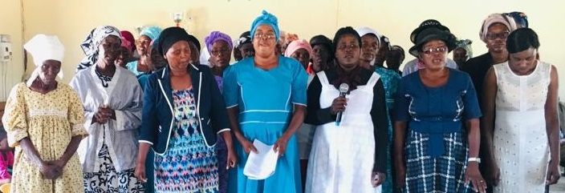

And he said unto them, "Go into all the world, and preach the gospel to the whole creation. He that believeth and is baptized shall be saved; but he that disbelieveth shall be condemned."
The Committee
.jpg)
Frans Hangula, Pastor
Pastor Frans was born in Northern part of Namibia, Ohangwena Region.The Pastor became a born again believer in the year 1974. And has been whorshiping in the church. God has anointed him with preaching the word of God. He ministers with passion and enthusiasm as he teaches God's Word with revelation and the power of the Holy Spirit. He walks with joy and a humble heart, and is always ready to encourage and minister God's love to those in need. He is the pastor of Onanhadi Pentecostal Protestant Church since 2000 till date..

Andreas Haifete, Evangelist
Mr Haifete was born in Namibia, Ohangwena Region.He became a born again believer. And has been whorship in the churches. He is a treasure in the church.

Amon Lenga, Evangelist
Mr Lenga was born in Namibia, Ohangwena Region.He became a born again believer. And has been preacher in the churches.

Magdalena Lenga, Secretary
Mrs Lenga was born in Namibia, Oshana Region.She became a born again believer. And has been whorship in the churches. God anointed her with singing and she is a Namibian Gospel artist. She is a teacher by professional.

Ailly Nangolo, Yourth leader
Worrship team Member
Ms Ailly was born in Ohangwena Region in Northern part of Namibia. Ailly became a born again believer at the age of 17. God has anointed him with singing, worshiping and leadership in the house of God.
Eneas, 2IC Yourth leader
Mr Eneas was born in Ohangwena Region in Northern part of Namibia. Eneas became a born again believer at the age of 23. He is a man that love Gospel and adore Jesus as his saviour.
Aina Nuulimba, School Sunday leader
Ms Aina was born in Ohangwena Region in Northern part of Namibia. She became a born again believer at the age of 24. God has anointed her with singing, worshiping and leadership in the house of God.
Moses Tukondjeni Munghono, System Manager
Networking Administarator
Software Engineer
Instrument Manager
Munghono, is man of God with a big heart to serve God's people. He walks with joy and a humble heart, and is always ready to encourage and minister God's love to those in need.
He is a resident of Onanhadi Endola, in the North of Namibia. He is the member of Pentecostal Protestant Church at Onanhadi. He is always explaining things concerning about the Bible and how that challenged him.
He is a Detective/investigating officer in Namibian police, hold of ;
1. 2004 Basic Criminal Investigation Certificate (IPIPC)
2. 2008 Advance Criminal Investigation Certificate (IPIPC)
3. 2010 Financial Crime &Money Laundering Certificate (IPIPC)
4. 2011 CID Unit Commanders Certificate (IPIPC)
5. 2011 Meetings Administration $ Report Writing Certificate (IPIPC)
6. 2016 Diploma in Computer Science (Unam)
7. CCNA Cybersecurity Operations certificate (Unam)
Amon Frans, System Administration
Instrumentalist
Mr Amon (State) was born in Ohangwena Region in Northern part of Namibia. Amon became a born again believer at the age of 17 and basicaly born in faith as the father is a pastor (Pastor Frans Hangula). God has anointed him with playing piano and bass quieter in the house of God.